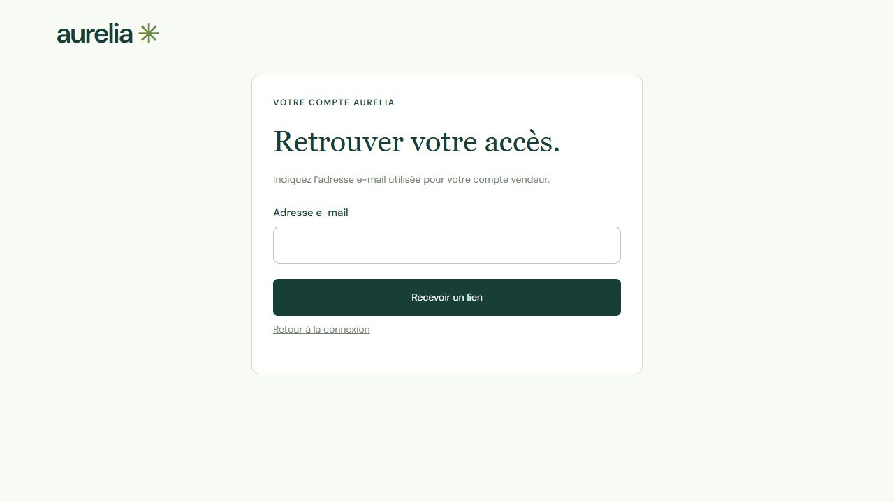
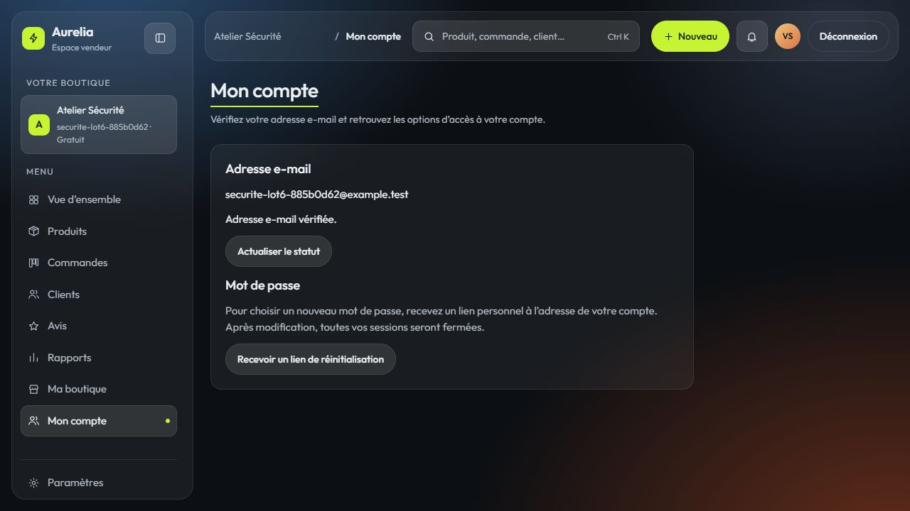
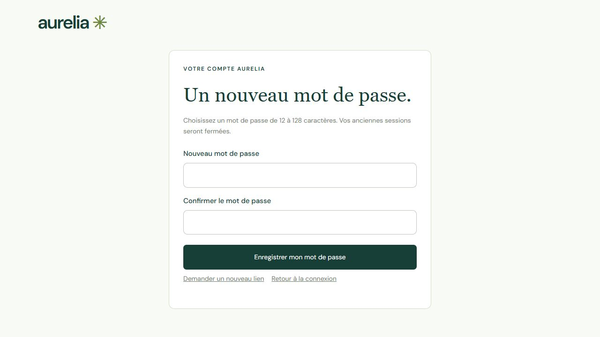

23 novembre 2026 · Branche feature/securite-comptes-lot-6.
.local/mail pour le développement ; transport SMTP configurable pour une future mise en ligne.Les comptes existants gardent leur accès. La vérification est proposée sans bloquer le catalogue ou la boutique publique. Aucun mot de passe existant n’a été changé automatiquement.
Sauvegarde avant migration dans .local/backups/lot6-2026-11-23. Les 9 produits, 5 catégories, 1 client, 1 commande et sa ligne, les médias et événements initiaux ainsi que l’identité de la boutique sont inchangés. Les 3 fichiers d’images sont identiques par comparaison SHA-256. Aucun e-mail de test n’a été demandé pour Yanshop.
Comparaison finale des données.
| Contrôle | Résultat |
|---|---|
| Suite automatisée | 80 tests réussis, aucun échec |
| Sécurité sur PostgreSQL natif | 9 tests réussis |
| Régressions natives | SaaS : 17 contrôles ; parcours complet : 8 tests — réussis |
| Compilations | Front et dashboard réussis |
| Navigateur | Demande de lien, génération locale, confirmation d’adresse, statut vérifié, formulaire de nouveau mot de passe et erreurs sur lien invalide |
| Mobile | Pages contrôlées à 320 pixels sans débordement horizontal |
Les scénarios testent les liens expirés et réutilisés, le remplacement d’un lien, la séparation des usages, les demandes concurrentes, la révocation de toutes les sessions du bon compte, la conservation des sessions d’un autre compte, la connexion concurrente à la réinitialisation, les origines interdites et la réponse de récupération identique pour les adresses connues ou inconnues. Un test dédié confirme la conservation des mots de passe, sessions et données pendant la migration 007.



Aucun message n’a été envoyé sur Internet. Ouvrir les fichiers .txt du dossier privé .local/mail pour retrouver les liens de test, puis copier le lien complet dans le navigateur. La réinitialisation est testée par les suites automatisées sur des comptes distincts ; le formulaire est inspecté dans le navigateur sans modifier le mot de passe de Yanshop.
Le fournisseur SMTP, la réception réelle et la délivrabilité ne sont pas configurés ni validés. La file d’envoi est en mémoire, sans relance persistante après incident. Avant publication, configurer HTTPS, SMTP et le domaine d’expédition. La vérification e-mail n’est pas une condition de publication dans cette version.
Guide complet, sécurité et configuration SMTP · Mon compte local